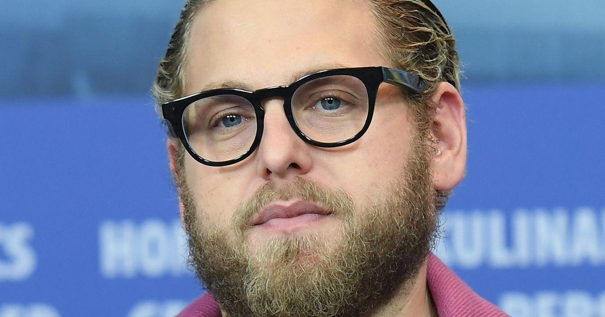

Here's What You Need To Know About The Backlash Against Jonah Hill's ExWhen Sarah Brady bravely shared text screenshots on her Instagram Story over the weekend that she alleged were from her ex-boyfriend, actor Jonah Hill, it resonated with women all over the world. The coercive, controlling language in the screenshots is immediately triggering for anyone who has endured emotional abuse. It also seemingly exposes Hill’s hypocrisy for publicly touting how much therapy has helped him and even going so far as to make a glowing documentary about his therapist. As the posts were widely shared and debated all over social media, many responded with hand-wringing sentiments to the tune of, “But that was gross of her to share their private texts,” or, “She humiliated him publicly! She’s the abusive one!” I know all too well how this knee-jerk abuse apologia festers in misogynist corners of social media. What I was not expecting was generally well-meaning, otherwise liberal women leaping to Hill’s defense. Emily Nussbaum, winner of the 2016 Pulitzer Prize for criticism, chimed in on her Twitter account to chastise Brady, claiming that she caused “harm” by sharing the texts. For younger women such as myself who have looked up to Nussbaum for ages, reading this was truly shattering and brings up an issue that I feel uniquely equipped to address. I consider myself as close to an expert as possible on this topic. I am 31 years old and have had a social media profile and a cellphone since I was 11. A core foundation of nearly all of my socializing, from puberty onward, has been texting. Fittingly, I wrote and performed a sold-out run of a one-woman show in New York City when I was 23 years old called “Text Me Back,” which was entirely based around sharing real text screenshots from my phone on a giant projector and making fun of them. It got me my lit agent, for whom I am writing the “Text Me Back” book of personal essays. I’ve reckoned with this “question” for a long time now, and to me, it’s not a question at all. There is no legal precedent for text conversations being “private,” and none of us signed NDAs. Why anyone would hold on to the assumption that any digital communication would remain “private” — when we all have instant screenshot capabilities and immediate digital access to our support systems, with which we can share said screenshots — is beyond me. Maybe it is just my age and the constant presence of digital communication throughout my life, but I don’t send emails and texts with the assumption that they will never be shared beyond the person I send them to. It was drilled into us by our parents and during computer lab class in elementary school: Never send an email you wouldn’t want to see on the cover of The New York Times. Nothing on a computer or phone is truly private, and most people my age and younger were never fooled into thinking that it was. Same goes for texting, dating apps and any social media. But even more importantly, as an emotional abuse survivor, I support sharing texts to warn other women about a dangerous man, and/or to show others that they are not alone. Survivorship can be so, so lonely. Literally any way that a survivor chooses to share their story is good, and they are being incredibly brave and taking a huge risk by doing it at all. When I chose to come forward about my emotional abuser ― a popular and well-liked fellow performer in the comedy community ― authority figures, peers and strangers disappointed me in a myriad of ways that I am still reconciling. “Abuse apologists think that men’s feelings are more important than women’s safety.” I first went to the institution where we both performed, and then to a private Facebook group for women in the comedy community to share stories, give each other advice and help spread word about which men in our community to avoid. I was met with not only a lack of support, but was actually chastised by the moderators, who told me that sharing my abuser’s name and photo “made our female members who are close to him uncomfortable.” How on earth are we supposed to forge true safe spaces and solidarity if women continually insist on defending the “reputations” of men? Why were they so preoccupied with ensuring that I wasn’t being “too mean” to my abuser? Why wasn’t their immediate concern protecting me and holding me up, as opposed to taking time out of their lives to email me with ridiculous rebuttals like, “His most recent ex didn’t have that experience, so you’re lying!” That era of my life was so, so dark, and I’m still dealing with the emotional fallout of publicly “feminist” women turning their backs on me in my most vulnerable moments. I am still recovering from the trauma of my own emotional abuse and how my coming forward played out, because it feels eerily similar to Brady’s journey. I wish her the healing, closure and support that we all deserve but that this patriarchal society so rarely affords us as survivors. (I also want to send her a cake and a luxury blanket and a spa weekend.) A major misogynist sticking point in reaction to the powerful Me Too movement was the constant chorus from abuse apologists who insist that something bad a man did “wasn’t illegal,” and therefore it’s not OK to share or try to hold him publicly accountable. Well, guess what? Sharing texts “isn’t illegal,” either. As women and survivors, we can never win. If Brady hadn’t shared these texts purportedly sent by Hill, misogynists would instantly claim that she’s lying because “there’s no evidence.” (For the record, victims’ stories are legally considered evidence in and of themselves.) And because Brady shared these alleged texts, she is being met with a chorus of those same misogynists whining that it’s “improper” to share such “private” things. This is why abuse was considered an “in-the-home” issue for so long — never discussed except via whispers — for fear of breaking a social “rule.” Abuse apologists think that men’s feelings are more important than women’s safety. Some other commenters online have even accused Brady of being “vindictive” and getting “revenge” by sharing these texts. If you view a woman simply sharing a man’s actual words — that he voluntarily wrote and sent out — as “revenge,” who are you truly implicating? You are admitting that the texts were bad and that them getting out would hurt the man’s reputation. Maybe get mad at the man who wrote the bad things in the first place? The onus should not be on the recipient to shield someone’s wrongdoing from the world. Victims do not owe their abusers secrecy or privacy. |
 |